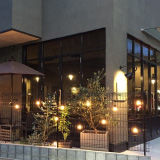

アミックスオーナー様の声をあつめました
アミックスをご利用いただいていますオーナーの皆様に、当社との関係や賃貸経営についてお話をお聞きしています。オーナー歴数十年のベテランの方から、賃貸経営はまったくはじめてというオーナー様まで、それぞれに興味深いお話をお伺いすることができました。
＊ オーナー様個人の感想です。
アミックスさんとの出会いは、購入しようとしていた土地について電話で相談したことがきっかけでした。 M様
数年前にアミックスで初めてアパートを建てられたM様は、現在、東京都下のマンションで充実した……≫つづきを読む
住んでいた二世帯住宅を賃貸併用住宅に建替えました。理想の住宅をつくりたいという長年の思いがかないました。 K様
お父様の代から、アミックスとお付き合いいただいているK様。家族構成が変わったことから……≫つづきを読む
祖父母の家を引継いだので、建替えて移り住むことにしました。これまでも大家業をしていたので、賃貸併用住宅に抵抗はなかったです。 O様
2020年に板橋区内で築古の建物から木造3階建ての賃貸併用住宅へと建替えられたオーナーのO様。……≫つづきを読む
建物が古くなってそのままにしていると、やっぱり入居者さんは離れていっちゃうねって話をしているんですよ。ちゃんと手を入れないとね。 T様
オーナーのT様は、33年前にお父様が建築された大規模マンション（10階建て／127戸）を経営されて……≫つづきを読む
しっかり自分でもリサーチをして、建物も実際に見たりして、そのうえで営業の方と会ってみるのが一番ですよね。 M様
昨年、オーナーのM様より、ご自宅から賃貸アパートへの建て替え工事をご発注いただきました。場所は……≫つづきを読む
商品だからこそ、大切にしたいし綺麗にしたい。どうしたら魅力あるものにできるかを考えていきたい。 O様
昨年、全国に非常事態宣言が出されていた頃、オーナーのO様より、所有されているアパートの入居者の方々に……≫つづきを読む
安定経営のためには長期入居がいちばん。このデザインを気に入ってくれた人なら、きっと長く住んでくれるでしょう。 T様
株式会社「家と冒険」様とのコラボレーションによる新しいスタイルのリノベーションを行いました。……≫つづきを読む
浴場入口の階段部分に滑り止め施工をしました。廃棄素材が利用できるなんていいですね。 東京都板橋区在住 H様
アミックスさんとの付き合いはもう10年ぐらいかな。以前、別の場所に持っていた浴場をアパートに建て替え……≫つづきを読む
煙突は高さがあるから地震が怖かったのですが、補修してひと安心。まだまだ、しばらくは頑張りますよ。 東京都江戸川区在住 T様
浴場は、父親が昭和39年に建ててから一切手を入れていないけど、傷んだりはしていない。大工さんの腕が……≫つづきを読む
店を休まずに耐震工事ができました。いつも通ってくれるお客さんのためにもよかったと思います。 東京都練馬区在住 K様
東京都と練馬区の両方から銭湯の耐震工事に補助金が出るそうで、それならと思って、アミックスさんに工事を……≫つづきを読む
ジムとの提携で営業時間を前倒したことで、お客さんが増えて、混雑も緩和できました。 東京都練馬区在住 T様
もともと1階にサウナと銭湯、2階には休憩所やマッサージ室、食事も提供する大広間がありました。健康ランドの……≫つづきを読む
 アパートにしたのは、土地を売りたくなかったから。自宅から遠いけれど、サブリースなので心配はないですね。
東京都青梅市在住 Y様
アパートにしたのは、土地を売りたくなかったから。自宅から遠いけれど、サブリースなので心配はないですね。
東京都青梅市在住 Y様
6人兄弟のうち5人が風呂屋でした。自分も風呂屋をやるのは当たり前だと思っていたし、仕事は好きでしたよ。……≫つづきを読む
いろいろ提案はあったけれど、最終的に木造3階建てアパートと自宅を建てました。サブリースなので安心です。 東京都北区在住 U様
風呂屋をやめた一番の理由はお袋が認知症になったこと。負担がかかるのは女房だから、自分が介護しなければ……≫つづきを読む
アミックスさんで建築して、サブリース管理もお願いしてる。全部おまかせできたから助かりました。 東京都葛飾区在住 S様
ここは防火地域だから、古いアパートを壊したらもう木造では建てられないと思っていたんだけど、アミックスさんから「いい方法がありますよ」って……≫つづきを読む
アパートがいくつもあるなかで、選んで入居してもらうにはなにか特長が必要ですよね。なるほどこれなら面白いなと。 東京都在住 N様・T様
アミックスでは、一般的な1Kと比べ1.5倍の広さのアパート「ゆとりの部屋」を建築しています。……≫つづきを読む
建て直すなら早いうちにやってしまおうと。子どもに渡すとしても、古いアパートより新しいほうがいいでしょう。 東京都在住 H様
今回、アミックス管理物件で初となるアパートの建て替えを行いました。無事竣工し、オーナー様にお話しをお伺いしましたので、ご紹介いたします。……≫つづきを読む
事業も不動産投資もそうだけど、いいなと思ったことはまずやってみる。行動してみなければ何もわからないでしょう。 東京都在住 I様
今回は、地元の足立区でさまざまな事業を展開されているオーナー様にお話しを伺いました。……≫つづきを読む
専門的なアドバイスのおかげで、コストを上げることなく、イメージ通りの仕上がりになりました。 東京都在住 K様
今年5月、都区内で駅からほど近い場所に土地オーナー様のお孫さんがカフェをオープンされました。カフェ兼自宅のほか、アパート2棟も建築されています。……≫つづきを読む
20年の長期契約で利回りの変動もなく、内装の修繕の心配もない保育園事業は、リスクの少ない投資だと思います。 東京都大田区在住 Y様
アミックスでは、今年の春あらたに開園した横浜市内の保育園を建築しました。こちらのオーナー様は、現在も都内で浴場経営される一方、横浜市の……≫つづきを読む
建築してからもう35年になります。いつも相談に乗ってもらっているので、地方に住んでいても不安はありません。 長野県在住 M様
今回は、今年アミックスがはじめる新サービス「50年サブリース」第1号となったアパートについてご紹介いたします。実は、東京・目白にあるこの……≫つづきを読む
保育園は今の時代に合った事業だと思います。契約は20年ですが、その後も再契約となるのではないでしょうか。 東京都墨田区在住 H様
アミックスでは、土地活用の方法のひとつとして、保育園建築をご提案しています。保育園の運営はすべて運営会社が行いますので、オーナー様は一切……≫つづきを読む
父の遺してくれたアパートを売却して、新築のアパートを建てました。頼りになるのは株より不動産投資です。 埼玉県在住 U様
「資産の組みかえ」は、今後価値が下がる可能性がある不動産を、比較的高値で売ることのできる今のうちに売却し、将来も安定した収益を確保できる……≫つづきを読む
保育園建築といっても、運営は一切ノータッチ。運営会社さんの協力で建築費用も約半分で済みました。 東京都中央区在住 O様
多くの自治体で待機児童問題を抱えている今、「保育園事業」はあらたな土地活用法として、今大変注目されています。今回は、アミックスで……≫つづきを読む
 リスクヘッジに最適なのは不動産投資。アミックスを
選んだ理由は、利回りの良さとサブリース管理でした。千葉県在住 A様
リスクヘッジに最適なのは不動産投資。アミックスを
選んだ理由は、利回りの良さとサブリース管理でした。千葉県在住 A様
今回は、「土地購入＋アパート建築」のプランで、埼玉県八潮市にアパートを建築していただいたA様にお話しを伺いました。……≫つづきを読む
 区画整理を機に土地を売却。その資金をもとに、
区画整理を機に土地を売却。その資金をもとに、
将来性のある土地で新しくアパートを建てました。東京都足立区在住 S様
アミックスでは、これまで土地オーナー様の資産（土地）活用として、賃貸経営のお手伝いをしてまいりました。そして最近では「土地から購入して、ア……≫つづきを読む
ありがとうございます。25年目の建て替え工事。東京都世田谷区在住 S様
昨年、25年前にアミックスでアパートを建てていただいたオーナー様からご依頼をいただき、再び同じ場所にアパートを建築させていただくことになりました。……≫つづきを読む
きっかけはインターネット。「初期費用は極力抑えるべき」という理念にまず関心を持ったんです。東京都国立市在住 M様
昨年インターネットでのお問い合わせから、はじめてアパート建築を受注させていただいたオーナー様のインタビューをお届けしたいと思います。……≫つづきを読む
アパートは何棟か持ってますが「一括借り上げ」なんて初めて知りました!!東京都北区在住 K様
「だるまや」は昭和22年に創業して以来十条の商店街で暖簾を守っているんですよ。都内で唯一の天然氷でできたかき氷っていうのを次男が始めてね、……≫つづきを読む
あのときアミックスさんに出会っていなかったら、うちも「バブル崩壊」の波にのまれていたんです。東京都足立区在住 I様
90年（平成2年）頃、うちの土地にマンションを建てることにしたんです。ちょうどバブルの真っ最中でね、周りの地主さんも建てていましたから。……≫つづきを読む
まったく初めてでも、やりかたによっては、賃貸経営ってできるものなんですね。東京都足立区在住 S様
浴場も最近は番台じゃなくてカウンター形式になってるんですよ。お客さんの要望が多いから。でも改装費用が５千万～１億円、それに工事で２ヵ月は……≫つづきを読む
はじめてアパートを建ててから20年。今ではアミックスさんのワンルームアパートを中心に170戸所有しています。東京都足立区在住 Ｂ様、Ｎ様ご夫妻
20年以上前に、当時健在だった父が、知り合いの地主さんから、アパート建築ならここがいいよ、と紹介されたのがアミックスさん。それが……≫つづきを読む
築26年の木造アパートですが、今もキレイで満室です。遠距離オーナーでも安心して賃貸経営をしています。長野県在住 K様、M様
私も父も須坂市（長野）に住んでいますが、アパートは東京の目白にあります。父が目白の土地にワンルームアパートを建てたのは、26年前になりますね。……≫つづきを読む
築20年、アパートを大々的にリニューアル。再度15年間のサブリース契約を結びました。東京都江戸川区在住 S様
アミックスでアパートを建てて20年。当初からサブリース契約でしたから、アパート経営がはじめての母でも、順調にやってこられたのだと思います。……≫つづきを読む
「環境を考え、地域に貢献する」これが今も昔もこの地に生まれ育った私の願いです。アミックスオーナー歴17年 元・環境大臣 鴨下一郎様
我が家は代々この地（足立区）に生まれ育っていますから、この地への愛着は大変あります。受け継いだ土地もありましたのでね……≫つづきを読む